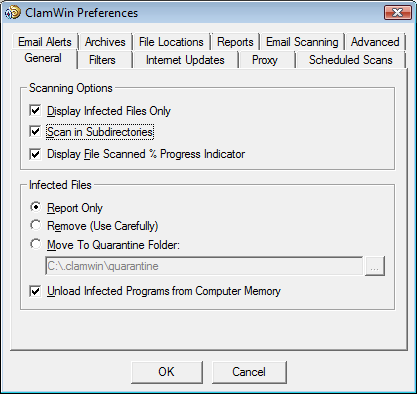
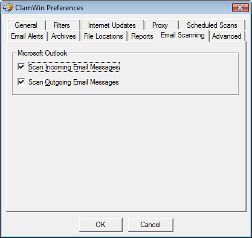

Instellingen
Om ClamWin in te stellen kunt u
met de rechtermuisknop klikken op het icoon in de System Tray en
Configure
ClamWin selecteren. U kunt ook van in
het hoofdvenster het menu Tools
openen en daarin de optie Preferences
aanklikken. Er wordt dan een dialoogvenster met negen tabbladen
getoond (zie afbeeldingen). Het dialoogvenster sluiten en de
veranderingen bewaren doet u door op OK
te klikken. Via de Cancel
toets sluit u het dialoogvenster zonder de veranderingen te bewaren.

De verschillende tabbladen of
pagina's worden in de volgende paragrafen besproken.
Instellingen - Algemeen
Deze pagina instellingen die
ClamWin's gedrag bepalen bij het scannen, en die aangeven wat ClamWin
moet doen met geïnfecteerde bestanden.
Het kader Scanning
Options bepaalt ClamWin's gedrag
tijdens het scannen. Elke combinatie van opties is mogelijk. De
opties zijn hier als volgt :
Display Infected Files Only
: Wanneer ClamWin een scan uitvoert worden de namen van de
gescande bestanden getoond. Als u echter deze optie selecteert zal
ClamWin enkel de namen van besmette bestanden tonen. Hierdoor zou
de snelheid in geringe mate verhoogd kunnen worden.
Scan In Subdirectories :
Vink deze optie aan om ClamWin zowel de bestanden in de
gespecificeerde map als die in de onderliggende mappen te laten
scannen.
Display
File Scanned % Progress Indicator :
Wanneer deze optie geselecteerd is, zal ClamWin de naam van het
bestand tonen dat op dat moment wordt gescand, met de vooruitgang in
percentage tussen haakjes. Voor gecomprimeerde bestanden wordt een
roterend streepje weergegeven, wat erop duidt dat de scan wel
degelijk uitgevoerd wordt.
Het kader Infected Files bevat
opties die bepalen welke actie ClamWin moet ondernemen wanneer het
een virus detecteert. Hier kan slechts één optie
worden gekozen. De opties zijn :
Report Only :
Wanneer ClamWin een virus vindt zal het dit enkel rapporteren.
Remove (Use Carefully):
Deze keuze betekent dat ClamWin besmette bestanden voorgoed
zal verwijderen. Het bestand wordt niet in de Windows
prullenmand geplaatst.
Move To Quarantine Folder :
In het geval van deze keuze zal ClamWin een besmet bestand
verplaatsen naar de opgegeven bestandsmap. Om deze map te
veranderen kunt u de locatie ingeven in het ingaveveld, of op de ...
knop drukken om de map te zoeken.
Als er al een bestand met
dezelfde naam aanwezig is in de quarantaine map, zal ClamWin een
extensie aan de bestandsnaam toevoegen bestaande uit een punt en een
volgnummer, zodat het bestaande bestand niet wordt overschreven.
Bijvoorbeeld : als er een bestand “eicar.com”
bestaat in de quarantaine map, dan zal het tweede bestand met
dezelfde naam hernoemd worden naar eicar.com.000.
Een derde copy wordt dan eicar.com.001,
enzovoort.
Tot slot is er de optie Unload
Infected Programs from Computer Memory.
Deze optie bepaalt of ClamWin moet proberen een bestand uit het
geheugen te verwijderen als het detecteert dat dit bestand
geïnfecteerd is tijdens het uitvoeren van een scan van het
geheugen. Deze actie is noodzakelijk om een bestand naar de
quarantaine-map te kunnen verplaatsen.
Filters

Via
deze pagina kan ClamWin ingesteld worden zodat het enkel bestanden
van bepaalde types scant, of zodat het bestanden van bepaalde types
zal negeren. Deze twee instellingen kunnen ook gecombineerd worden
om een grotere controle te krijgen over de bestandstypen die worden
gescand.
Specifieke bestanden kunnen gefilterd
worden door de volledige locatie van het bestand in te geven,
bijvoorbeeld :
C:\Path\to\folder\File.ext
Mappen kunnen gefilterd worden door
de locatie (inclusief *) in te geven. Bijvoorbeeld :
C:\Path\to\folder\*
Let
erop dat * niet hetzelfde is als \, dus wanneer u een map met alle
submappen wil uitfilteren, zal u een reguliere expressie moeten
gebruiken en .* (punt ster) moeten toevoegen op het einde:
<C:\\Path\\to\\folder\\.*>
U kunt reguliere expressies gebruiken
voor een grotere flexibiliteit, maar deze moeten dan binnen punthaken
geplaatst worden ( <Reguliere expressie> ). U moet ook \\
gebruiken omdat \ een gereserveerd karrakter is. Meer informatie en
tutorials over reguliere expressies zijn te vinden op het Internet.
Gebruik hiervoor uw favoriete searchengine en zoek op regular
expression tutorial.
Standaard worden de volgende
bestandstypen uitgesloten van de virus scans :
*.dbx (gebruikt door Microsoft
Outlook Express om e-mails en dergelijke te bewaren)
*.tbb (gebruikt door Ritlabs The Bat!
om e-mails en dergelijke te bewaren)
*.pst (gebruikt door Microsoft
Outlook om gegevens te bewaren)
*.dat
*.log
*.evt
*.nsf
*.ntf
*.chm (Windows help bestanden)
Internet Updates
Op deze pagina kunt u controleren hoe
ClamWin updates ophaalt van de virus database.


Enable Automatic Virus Database Updates :
Als deze
optie is aangevinkt zal ClamWin automatisch controleren of er updates
voor de database beschikbaar zijn. U kunt ook instellen hoe vaak dit
gecontroleerd moet worden en wanneer.
Wanneer ClamWin niet draait (of de PC
uit staat) op het ingestelde tijdstip, zal de update worden
uitgevoerd op het eerstvolgende ogenblik wanneer ClamWin wordt
gestart (meestal wanneer de PC wordt aangezet). De enige
uitzondering hierop is wanneer de update frequentie is ingesteld op
“workdays”. In dat geval zal er tijdens het weekend
niets gebeuren tot maandag.
Het adres van de server waarvan
de updates moeten worden opgehaald kan handmatig ingesteld worden.
Meestal zult u hier de standaard instellingen willen behouden
(database.clamav.net).
Indien u echter over een lokale server beschikt die gesynchroniseerd
is met database.clamav.net (een zogenaamde mirror), kunt u die server
instellen. Voor een lijst van zulke mirrors kunt u terecht op
http://www.clamav.net.
Warn if Virus Database is Out of Date:
Met deze optie aan zal ClamWin u waarschuwen wanneer uw database niet
meer overeenkomt met de laatste stand.
Update Virus Database On Logon :
Als deze
optie is gekozen, zal ClamWin updates ophalen telkens als een
gebruiker zich aanmeldt op de PC.
Notify About New
ClamWin Releases: Met deze optie kan u ClamWin automatisch laten
controleren of er nieuwe versies van ClamWin vrijgegeven zijn. Deze
controle gebeurt 5 minuten na het opstarten van ClamWin, en daarna om
de 24 uur.
Proxy
Indien u via een proxy server
verbonden bent met het internet, moet u de details van deze
verbinding ingeven in dit tabblad. Zoniet, laat dan alle velden
leeg. De meeste gebruikers hebben geen proxy nodig, en kunnen deze
instellingen gerust negeren.

Geplande Scans
Op deze pagina kunnen scans
ingesteld worden zodat deze op gezette tijden uitgevoerd worden. De
details van deze geplande taken worden hier getoond. Om een taak toe
te voegen klikt u op Add
en geeft u een beschrijving,
frequentie en tijd in en de map die gescand moet worden.

Een bestaande taak kan
aangepast worden door op Edit
te klikken en verwijderd worden via de knop Remove.

De geplande taken kunnen geactiveerd
of uitgeschakeld worden door op de respectievelijke knop te drukken.
Een uitgeschakelde taak zal dan niet op de geplande tijden uitgevoerd
worden.
Email Meldingen

U kunt ClamWin zo instellen dat
een e-mail rapport wordt gestuurd wanneer een virus wordt
gedetecteerd. Selecteer hiervoor de optie
Alert On Virus Detection. Vul de
benodigde gegevens in om een verbinding te maken met de SMTP server ,
en de details voor de boodschap (onderwerp, zender en ontvanger).
Opmerking: somige SMTP servers
vereisen geen gebruikersnaam en wachtwoord. Indien dit het geval is
kunt u deze velden leeg laten.
Om de instellingen te testen
klikt u op de knop Send Test Email.
Wanneer deze optie is geselecteerd
zal ClamWin een e-mail rapport gestuurd worden telkens wanneer een
virus is gevonden. Deze e-mail zal de naam van de computer bevatten
vanaf waar de e-mail is gezonden, en een kopie van het scan log
bestand.
Archieven (Gecomprimeerde bestanden)
ClamWin kan bestanden in
gecomprimeerde bestanden (zoals .zip bestanden) controleren op
virussen.

Op deze pagina kunt u instellen of
ClamWin al dan niet deze gecomprimeerde bestanden moet controleren.
U kunt ook een maximale grootte instellen voor de gecomprimeerde
bestanden die moeten worden gecontroleerd, alsook een maximaal aantal
bestanden dat moet worden gecontroleerd, en een maximum aantal
gecomprimeerde bestanden dat binnenin het bestand moeten worden
gecontroleerd.
Scannen binnen gecomprimeerde
bestanden kan een scan trager maken, dus deze optie uitschakelen kan
de tijd die nodig is per scan verminderen.
Bestandslocaties
Deze pagina laat toe de map te
veranderen waarin de ClamScan en FreshClam programmabestanden en de
virus database zich bevinden (FreshClam is het programma dat de
automatische updates van de virus database verzorgt). Deze gegevens
worden ingesteld tijdens de installatie en moeten normaal nooit
worden aangepast.

Verander deze gegevens nooit
tenzij u weet wat u doet ! Indien ze niet correct zijn zal ClamWin
niet meer werken.
Rapporten
Deze pagina laat u toe de mappen en
bestandsnamen van de log bestanden te veranderen. De meeste
gebruikers zullen dit nooit hoeven aan te passen.

U kunt ook instellen of er pop-up
meldingen moeten worden weergegeven via deze pagina. Dit gebeurd
reeds bij een standaard installatie. Door de optie Display Pop-up
Notification Messages in Taskbar uit te schakelen voorkomt u dat
deze pop-ups worden getoond wanneer een virus wordt gedetecteerd,
wanneer de virus database is vernieuwd, enzovoort.
Email Scanning
Deze pagina wordt enkel getoond
wanneer de add-in voor Microsoft Outlook is geïnstalleerd.

De gebruiker kan hier kiezen of
inkomende en/of uitgaande email berichten gescand moeten worden.
Geavanceerd
Deze pagina bevat zes instellingen.
Voor de meeste gebruikers zullen de standaard instellingen voldoen.

Treat Files As
Mailboxes : Wanneer deze optie is
aangevinkt zal ClamWin alle bestanden bekijken alsof het MIME e-mail
boodschappen waren (bijvoorbeeld Unix/Linux mailboxen, .eml
bestanden gegenereerd in Outlook Express, ...). Ook niet-MIME
bestanden kunnen met deze optie gescand worden, doch dit zal het
scan proces vertragen.
Extract Attachments
and Macros from MS Office Documens:
Met deze optie zal ClamWin MS Office documenten controleren op
macrovirussen.
Try to Scan Executable Files Only: Met
deze optie aan zal ClamWin enkel uitvoerbare programmabestanden
controleren.
Additional Clamscan Command
Line Parameters: Als u extra opties voor ClamScan wil gebruiken
die momenteel nog niet door ClamWin worden ondersteund, kan u ze
hier toevoegen.
Limit Log File Size To:
Oude logbestanden zullen indien nodig automatisch gewist worden om
de totale grootte van de log bestanden beperkt te houden tot de
ingestelde grootte.
Scanner Priority: Deze
kan ingesteld worden op Low, Normal of High, en bepaalt hoe de
totale CPU-tijd wordt verdeeld tussen ClamWin en de andere
applicaties op de PC. Deze optie op High zetten kan het scan
process versnellen, maar andere applicaties vertragen. Anderzijds
zal met deze optie op Low het scan proces vertragen, maar zullen
andere applicaties hier minder invloed van ondervinden.